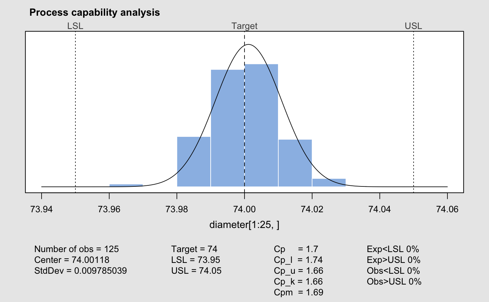
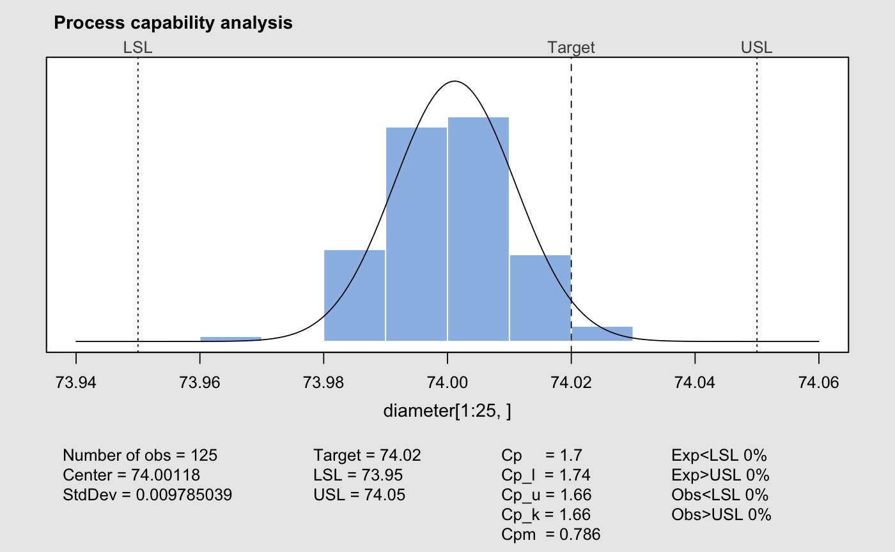
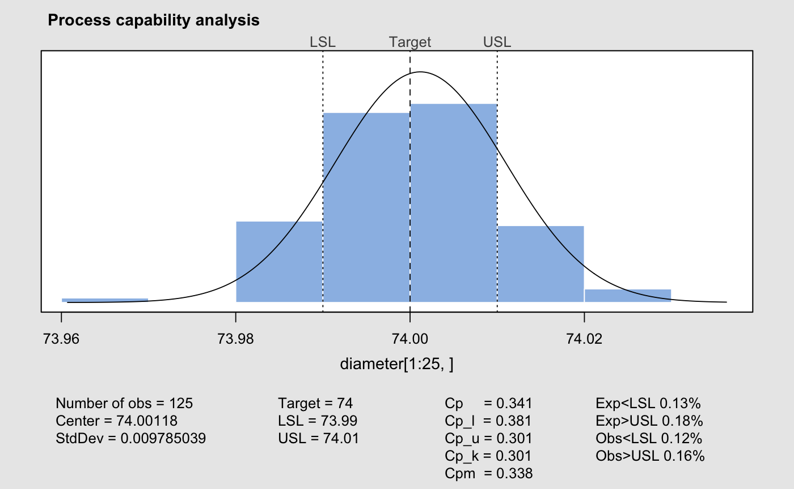
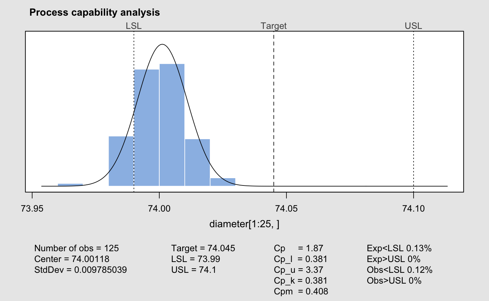

process.capability.RdComputes process capability indices for a 'qcc' object of type "xbar" and plot the histogram.
process.capability(object, spec.limits, target, std.dev, nsigmas,
confidence.level = 0.95, plot = TRUE, …)
# S3 method for process.capability
print(x, digits = getOption("digits"), …)
# S3 method for process.capability
plot(x,
add.stats = qcc.options("rules"),
breaks = "scott",
col = adjustcolor(qcc.options("zones")$fill, alpha.f = 0.5),
border = "white",
digits = getOption("digits"),
restore.par = TRUE, …)
| object | a 'qcc' object of type |
|---|---|
| spec.limits | a two-values vector specifying the lower and upper specification limits. For one-sided specification limits, the value of the missing limit must be set to |
| target | a value specifying the target of the process. If missing the value from the 'qcc' object is used if not |
| std.dev | a value specifying the within-group standard deviation. If not provided is taken from the 'qcc' object. |
| nsigmas | a numeric value specifying the number of sigmas to use. If not provided is taken from the 'qcc' object. |
| confidence.level | a numeric value between 0 and 1 specifying the level to use for computing confidence intervals. |
| plot | a logical value; if |
| x | an object of class 'process.capability'. |
| add.stats | a logical value indicating whether statistics and capability indices should be added at the bottom of the chart. |
| breaks | a value or string used to draw the histogram. See the help for |
| col, border | values specifying the colour of the area and the border of the histogram. |
a logical value indicating whether statistics and capability indices should be printed. |
|
| digits | the number of significant digits to use. |
| restore.par | a logical value indicating whether the previous |
| … | catches further ignored arguments. |
This function calculates confidence limits for \(C_p\) using the method described by Chou et al. (1990). Approximate confidence limits for \(C_{pl}\), \(C_{pu}\) and \(C_{pk}\) are computed using the method in Bissell (1990). Confidence limits for \(C_{pm}\) are based on the method of Boyles (1991); this method is approximate and it assumes that the target is midway between the specification limits.
Invisibly returns a list with components:
number of observations
center
standard deviation
target
a vector of values giving the lower specification limit (LSL) and the upper specification limit (USL)
a matrix of capability indices (\(C_p\), \(C_{pl}\), \(C_{pu}\), \(C_{pk}\), \(C_{pm}\)) and the corresponding confidence limits.
a vector of values giving the expected fraction, based on a normal approximation, of the observations less than LSL and greater than USL.
a vector of values giving the fraction of observations less than LSL and greater than USL.
Bissell, A.F. (1990) How reliable is your capability index?, Applied Statistics, 39, 331-340.
Boyles, R.A. (1991) The Taguchi capability index, Journal of Quality Technology, 23, 107-126.
Chou, Y., Owen D.B. and Borrego S.A. (1990) Lower Confidence Limits on Process Capability Indices, Journal of Quality Technology, 22, 223-229.
Montgomery, D.C. (2005) Introduction to Statistical Quality Control, 5th ed. New York: John Wiley & Sons.
Wetherill, G.B. and Brown, D.W. (1991) Statistical Process Control. New York: Chapman & Hall.
data(pistonrings) diameter <- qcc.groups(diameter, sample, data = pistonrings) q <- qcc(diameter[1:25,], type="xbar", nsigmas=3, plot=FALSE) process.capability(q, spec.limits=c(73.95,74.05))#> Process Capability Analysis #> #> Number of obs = 0 Target = 74 #> Center = 74 LSL = 73.95 #> StdDev = 0.009785 USL = 74.05 #> #> Capability indices: #> Value 2.5% 97.5% #> Cp 1.703 1.491 1.915 #> Cp_l 1.743 1.555 1.932 #> Cp_u 1.663 1.483 1.844 #> Cp_k 1.663 1.448 1.878 #> Cpm 1.691 1.480 1.902 #> #> Exp<LSL 0% Obs<LSL 0% #> Exp>USL 0% Obs>USL 0%#> Process Capability Analysis #> #> Number of obs = 0 Target = 74.02 #> Center = 74 LSL = 73.95 #> StdDev = 0.009785 USL = 74.05 #> #> Capability indices: #> Value 2.5% 97.5% #> Cp 1.7033 1.4914 1.9148 #> Cp_l 1.7433 1.5548 1.9319 #> Cp_u 1.6632 1.4827 1.8437 #> Cp_k 1.6632 1.4481 1.8783 #> Cpm 0.7856 0.6556 0.9154 #> #> Exp<LSL 0% Obs<LSL 0% #> Exp>USL 0% Obs>USL 0%#> Process Capability Analysis #> #> Number of obs = 0 Target = 74 #> Center = 74 LSL = 73.99 #> StdDev = 0.009785 USL = 74.01 #> #> Capability indices: #> Value 2.5% 97.5% #> Cp 0.3407 0.2983 0.3830 #> Cp_l 0.3807 0.3176 0.4439 #> Cp_u 0.3006 0.2424 0.3588 #> Cp_k 0.3006 0.2312 0.3700 #> Cpm 0.3382 0.2960 0.3804 #> #> Exp<LSL 0.13% Obs<LSL 0.12% #> Exp>USL 0.18% Obs>USL 0.16%#> Process Capability Analysis #> #> Number of obs = 0 Target = 74.05 #> Center = 74 LSL = 73.99 #> StdDev = 0.009785 USL = 74.1 #> #> Capability indices: #> Value 2.5% 97.5% #> Cp 1.8736 1.6406 2.1063 #> Cp_l 0.3807 0.3176 0.4439 #> Cp_u 3.3665 3.0115 3.7215 #> Cp_k 0.3807 0.3055 0.4559 #> Cpm 0.4083 0.3377 0.4788 #> #> Exp<LSL 0.13% Obs<LSL 0.12% #> Exp>USL 0% Obs>USL 0%